Note
Click here to download the full example code or to run this example in your browser via Binder
9.1.3. 3D and 4D niimgs: handling and visualizing¶
Here we discover how to work with 3D and 4D niimgs.
9.1.3.1. Downloading tutorial datasets from Internet¶
Nilearn comes with functions that download public data from Internet
Let’s first check where the data is downloaded on our disk:
from nilearn import datasets
print('Datasets are stored in: %r' % datasets.get_data_dirs())
Out:
Datasets are stored in: ['/home/circleci/nilearn_data']
Let’s now retrieve a motor contrast from a Neurovault repository
Out:
['/home/circleci/nilearn_data/neurovault/collection_658/image_10426.nii.gz']
motor_images is a list of filenames. We need to take the first one
9.1.3.2. Visualizing a 3D file¶
The file contains a 3D volume, we can easily visualize it as a statistical map:
from nilearn import plotting
plotting.plot_stat_map(tmap_filename)
Out:
/home/circleci/project/nilearn/plotting/img_plotting.py:340: FutureWarning: Default resolution of the MNI template will change from 2mm to 1mm in version 0.10.0
anat_img = load_mni152_template()
<nilearn.plotting.displays._slicers.OrthoSlicer object at 0x7f0b29ce1fa0>
Visualizing works better with a threshold
plotting.plot_stat_map(tmap_filename, threshold=3)
Out:
<nilearn.plotting.displays._slicers.OrthoSlicer object at 0x7f0b29d9d520>
9.1.3.3. Visualizing one volume in a 4D file¶
We can download resting-state networks from the Smith 2009 study on correspondence between rest and task
rsn = datasets.fetch_atlas_smith_2009()['rsn10']
rsn
Out:
'/home/circleci/nilearn_data/smith_2009/PNAS_Smith09_rsn10.nii.gz'
It is a 4D nifti file. We load it into the memory to print its shape.
from nilearn import image
print(image.load_img(rsn).shape)
Out:
(91, 109, 91, 10)
We can retrieve the first volume (note that Python indexing starts at 0):
first_rsn = image.index_img(rsn, 0)
print(first_rsn.shape)
Out:
(91, 109, 91)
first_rsn is a 3D image.
We can then plot it
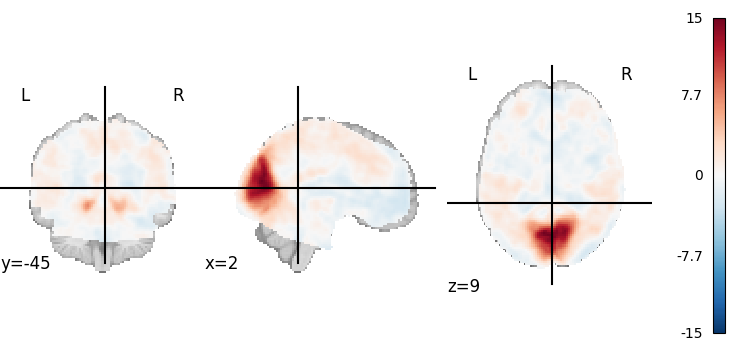Out:
<nilearn.plotting.displays._slicers.OrthoSlicer object at 0x7f0b29bcf3d0>
9.1.3.4. Looping on all volumes in a 4D file¶
If we want to plot all the volumes in this 4D file, we can use iter_img to loop on them.
Then we give a few arguments to plot_stat_map in order to have a more compact display.
for img in image.iter_img(rsn):
# img is now an in-memory 3D img
plotting.plot_stat_map(img, threshold=3, display_mode="z", cut_coords=1,
colorbar=False)
- 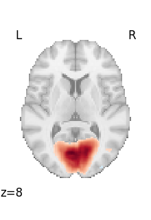

- 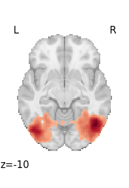
- 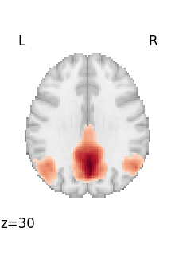
- 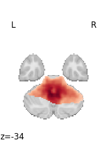
- 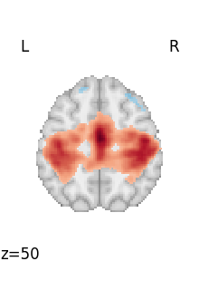
- 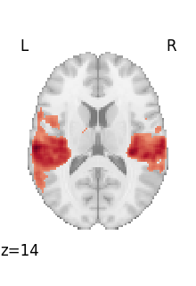
- 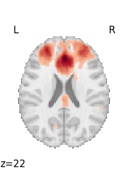
- 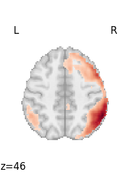
- 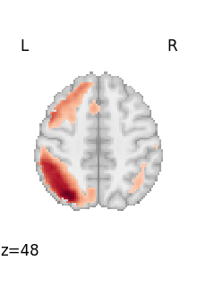
9.1.3.5. Looping through selected volumes in a 4D file¶
If we want to plot selected volumes in this 4D file, we can use index_img with the slice constructor to select the desired volumes.
Afterwards, we’ll use iter_img to loop through them following the same formula as before.
selected_volumes = image.index_img(rsn, slice(3, 5))
If you’re new to Python, one thing to note is that the slice constructor uses 0-based indexing. You can confirm this by matching these slices to the previous plot above.
- 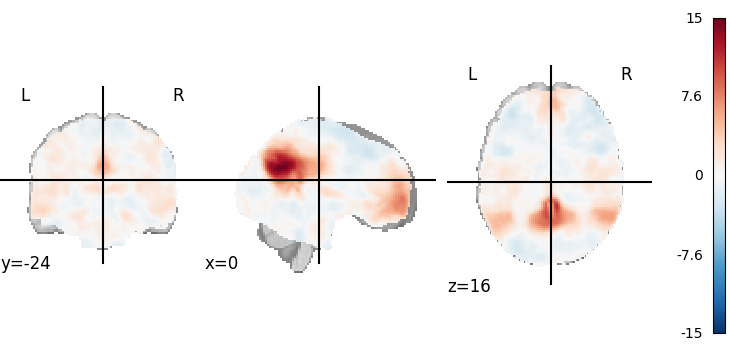
- 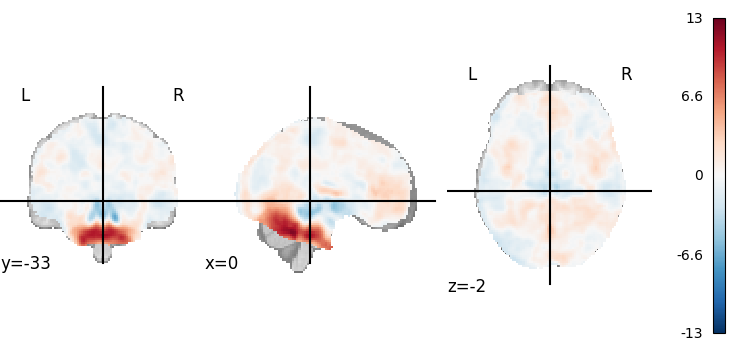
plotting.show is useful to force the display of figures when running outside IPython
To recap, neuroimaging images (niimgs as we call them) come in different flavors:
3D images, containing only one brain volume
4D images, containing multiple brain volumes.
More details about the input formats in nilearn for 3D and 4D images is given in the documentation section: Inputing data: file names or image objects.
Functions accept either 3D or 4D images, and we need to use on the one
hand nilearn.image.index_img or nilearn.image.iter_img
to break down 4D images into 3D images, and on the other hand
nilearn.image.concat_imgs to group a list of 3D images into a 4D
image.
Total running time of the script: ( 0 minutes 11.480 seconds)
Estimated memory usage: 168 MB